vignettes/vignette3.rmd
vignette3.rmdR package gllvm fits Generalized linear latent variable models (GLLVM) for multivariate data1.
Developed by J. Niku, W.Brooks, R. Herliansyah, F.K.C. Hui, S. Taskinen, D.I. Warton, B. van der Veen.
The package available in
Package installation:
# From CRAN
install.packages(gllvm)
# OR
# From GitHub using devtools package's function install_github
devtools::install_github("JenniNiku/gllvm")gllvm package depends on R packages TMB and mvabund, try to install these first.
GLLVMs are computationally intensive to fit due the integral in log-likelihood.
gllvm package overcomes computational problems by applying closed form approximations to log-likelihood and using automatic differentiation in C++ to accelerate computation times (TMB2).
Estimation is performed using either variational approximation (VA3), extended variational approximation method (EVA4) or Laplace approximation (LA5) method implemented via R package TMB.
VA method is faster and more accurate than LA, but not applicable for all distributions and link functions.
Using gllvm we can fit
Additional tools: model checking, model selection, inference, visualization.
| Response | Distribution | Method | Link |
|---|---|---|---|
| Counts | Poisson | VA/LA | log |
| NB | VA/LA | log | |
| ZIP | LA | log | |
| Binary | Bernoulli | VA/LA | probit |
| EVA/LA | logit | ||
| Ordinal | Ordinal | VA | probit |
| Normal | Gaussian | VA/LA | identity |
| Positive continuous | Gamma | VA/LA | log |
| Non-negative continuous | Exponential | VA/LA | log |
| Biomass | Tweedie | LA/EVA | log |
| Percent cover | beta | LA/EVA | probit/logit |
Main function of the gllvm package is
gllvm(), which can be used to fit GLLVMs for multivariate
data with the most important arguments listed in the following:
gllvm(y = NULL, X = NULL, TR = NULL, family, num.lv = 2,
formula = NULL, method = "VA", row.eff = FALSE, n.init=1, starting.val ="res", ...)soil.dry: Soil dry massbare.sand: cover of bare sandfallen.leaves: cover of fallen leaves/twigsmoss: cover of mossherb.layer: cover of herb layerreflection: reflection of the soil surface with a
cloudless skyFitting basic GLLVM with gllvm:
data("spider", package = "mvabund")
library(gllvm)
fitnb <- gllvm(y = spider$abund, family = "negative.binomial", num.lv = 2)
fitnb
## Call:
## gllvm(y = spider$abund, family = "negative.binomial", num.lv = 2)
## family:
## [1] "negative.binomial"
## method:
## [1] "VA"
##
## log-likelihood: -733.6806
## Residual degrees of freedom: 289
## AIC: 1561.361
## AICc: 1577.028
## BIC: 1740.765Residual analysis can be used to assess the appropriateness of the fitted model (eg. in terms of mean-variance relationship).
Randomized quantile/Dunn-Smyth residuals7 are used in the package, as they provide standard normal distributed residuals, even for discrete responses, in the case of a proper model.
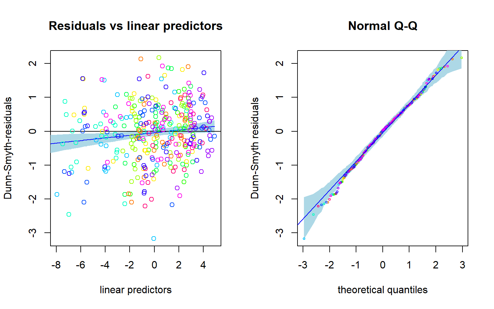
Try to do these exercises for the next 10 minutes, as many as time is enough for.
E1. Load spider data from mvabund package and take a look at the dataset.
1. Print the data and covariates and draw a boxplot of the data.
# response matrix:
spider$abund
## Alopacce Alopcune Alopfabr Arctlute Arctperi Auloalbi Pardlugu Pardmont
## [1,] 25 10 0 0 0 4 0 60
## [2,] 0 2 0 0 0 30 1 1
## [3,] 15 20 2 2 0 9 1 29
## [4,] 2 6 0 1 0 24 1 7
## [5,] 1 20 0 2 0 9 1 2
## [6,] 0 6 0 6 0 6 0 11
## [7,] 2 7 0 12 0 16 1 30
## [8,] 0 11 0 0 0 7 55 2
## [9,] 1 1 0 0 0 0 0 26
## [10,] 3 0 1 0 0 0 0 22
## [11,] 15 1 2 0 0 1 0 95
## [12,] 16 13 0 0 0 0 0 96
## [13,] 3 43 1 2 0 18 1 24
## [14,] 0 2 0 1 0 4 3 14
## [15,] 0 0 0 0 0 0 6 0
## [16,] 0 3 0 0 0 0 6 0
## [17,] 0 0 0 0 0 0 2 0
## [18,] 0 1 0 0 0 0 5 0
## [19,] 0 1 0 0 0 0 12 0
## [20,] 0 2 0 0 0 0 13 0
## [21,] 0 1 0 0 0 0 16 1
## [22,] 7 0 16 0 4 0 0 2
## [23,] 17 0 15 0 7 0 2 6
## [24,] 11 0 20 0 5 0 0 3
## [25,] 9 1 9 0 0 2 1 11
## [26,] 3 0 6 0 18 0 0 0
## [27,] 29 0 11 0 4 0 0 1
## [28,] 15 0 14 0 1 0 0 6
## Pardnigr Pardpull Trocterr Zoraspin
## [1,] 12 45 57 4
## [2,] 15 37 65 9
## [3,] 18 45 66 1
## [4,] 29 94 86 25
## [5,] 135 76 91 17
## [6,] 27 24 63 34
## [7,] 89 105 118 16
## [8,] 2 1 30 3
## [9,] 1 1 2 0
## [10,] 0 0 1 0
## [11,] 0 1 4 0
## [12,] 1 8 13 0
## [13,] 53 72 97 22
## [14,] 15 72 94 32
## [15,] 0 0 25 3
## [16,] 2 0 28 4
## [17,] 0 0 23 2
## [18,] 0 0 25 0
## [19,] 1 0 22 3
## [20,] 0 0 22 2
## [21,] 0 1 18 2
## [22,] 0 0 1 0
## [23,] 0 0 1 0
## [24,] 0 0 0 0
## [25,] 6 0 16 6
## [26,] 0 0 1 0
## [27,] 0 0 0 0
## [28,] 0 0 2 0
# Environmental variables
spider$x
## soil.dry bare.sand fallen.leaves moss herb.layer reflection
## 1 2.3321 0.0000 0.0000 3.0445 4.4543 3.9120
## 2 3.0493 0.0000 1.7918 1.0986 4.5643 1.6094
## 3 2.5572 0.0000 0.0000 2.3979 4.6052 3.6889
## 4 2.6741 0.0000 0.0000 2.3979 4.6151 2.9957
## 5 3.0155 0.0000 0.0000 0.0000 4.6151 2.3026
## 6 3.3810 2.3979 3.4340 2.3979 3.4340 0.6931
## 7 3.1781 0.0000 0.0000 0.6931 4.6151 2.3026
## 8 2.6247 0.0000 4.2627 1.0986 3.4340 0.6931
## 9 2.4849 0.0000 0.0000 4.3307 3.2581 3.4012
## 10 2.1972 3.9318 0.0000 3.4340 3.0445 3.6889
## 11 2.2192 0.0000 0.0000 4.1109 3.7136 3.6889
## 12 2.2925 0.0000 0.0000 3.8286 4.0254 3.6889
## 13 3.5175 1.7918 1.7918 0.6931 4.5109 3.4012
## 14 3.0865 0.0000 0.0000 1.7918 4.5643 1.0986
## 15 3.2696 0.0000 4.3944 0.6931 3.0445 0.6931
## 16 3.0301 0.0000 4.6052 0.6931 0.6931 0.0000
## 17 3.3322 0.0000 4.4543 0.6931 3.0445 1.0986
## 18 3.1224 0.0000 4.3944 0.0000 3.0445 1.0986
## 19 2.9232 0.0000 4.5109 1.6094 1.6094 0.0000
## 20 3.1091 0.0000 4.5951 0.6931 0.6931 0.0000
## 21 2.9755 0.0000 4.5643 0.6931 1.7918 0.0000
## 22 1.2528 3.2581 0.0000 4.3307 0.6931 3.9120
## 23 1.1939 3.0445 0.0000 4.0254 3.2581 4.0943
## 24 1.6487 3.2581 0.0000 4.0254 3.0445 4.0073
## 25 1.8245 3.5835 0.0000 1.0986 4.1109 2.3026
## 26 0.9933 4.5109 0.0000 1.7918 1.7918 4.3820
## 27 0.9555 2.3979 0.0000 3.8286 3.4340 3.6889
## 28 0.9555 3.4340 0.0000 3.7136 3.4340 3.6889
# Plot data using boxplot:
boxplot(spider$abund)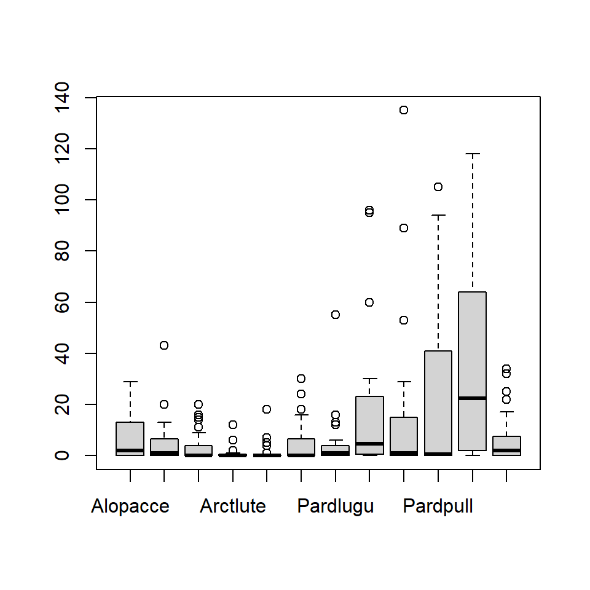
E2. Fit GLLVM to spider data with a suitable distribution. Data consists of counts of spider species.
# Take a look at the function documentation for help:
?gllvm2. Response variables in spider data are counts, so Poisson, negative binomial and zero inflated Poisson are possible. However, ZIP is implemented only with Laplace method, so it need to be noticed, that if models are fitted with different methods they can not be compared with information criteria. Let’s try just with a Poisson and NB. NOTE THAT the results may not be exactly the same as below, as the initial values for each model fit are slightly different, so the results may also differ slightly.
# Fit a GLLVM to data
fitp <- gllvm(y = spider$abund, family = poisson(), num.lv = 2)
fitp
## Call:
## gllvm(y = spider$abund, family = poisson(), num.lv = 2)
## family:
## [1] "poisson"
## method:
## [1] "VA"
##
## log-likelihood: -845.8277
## Residual degrees of freedom: 301
## AIC: 1761.655
## AICc: 1770.055
## BIC: 1895.254
fitnb <- gllvm(y = spider$abund, family = "negative.binomial", num.lv = 2)
fitnb
## Call:
## gllvm(y = spider$abund, family = "negative.binomial", num.lv = 2)
## family:
## [1] "negative.binomial"
## method:
## [1] "VA"
##
## log-likelihood: -733.6806
## Residual degrees of freedom: 289
## AIC: 1561.361
## AICc: 1577.028
## BIC: 1740.765Based on AIC, NB distribution suits better. How about residual analysis: NOTE THAT The package uses randomized quantile residuals so each time you plot the residuals, they look a little different.
# Fit a GLLVM to data
plot(fitp)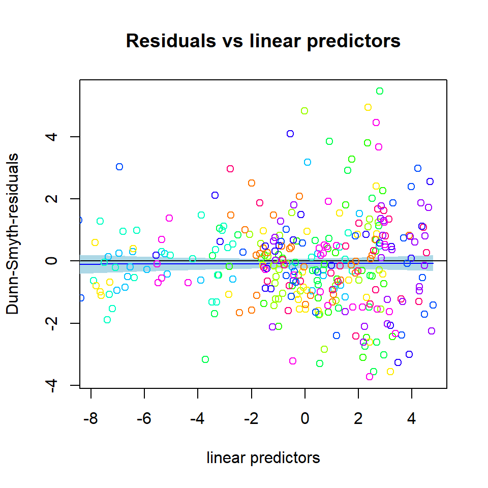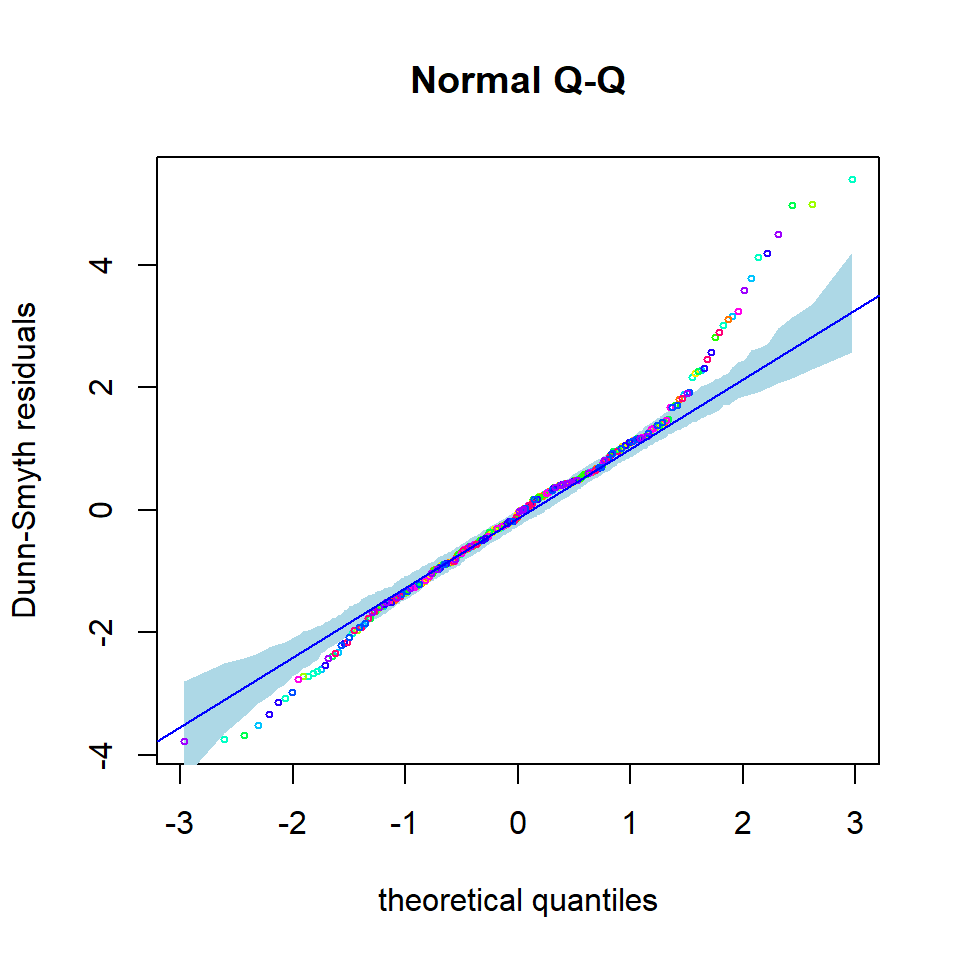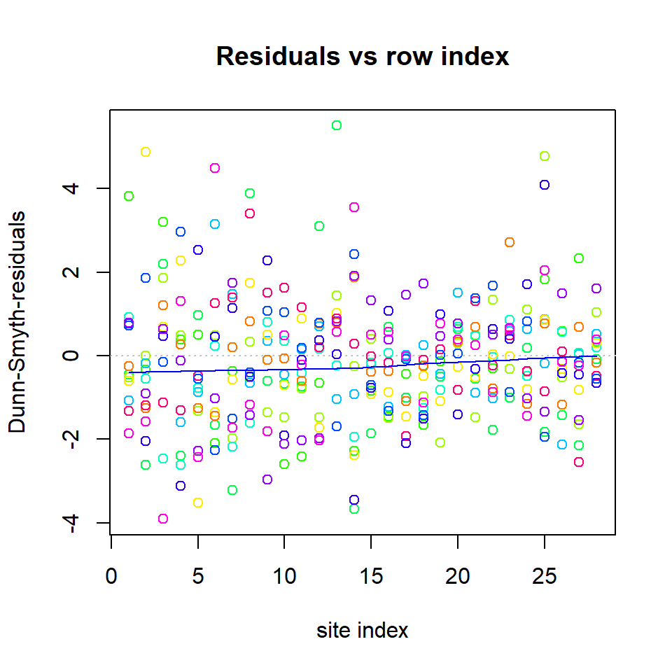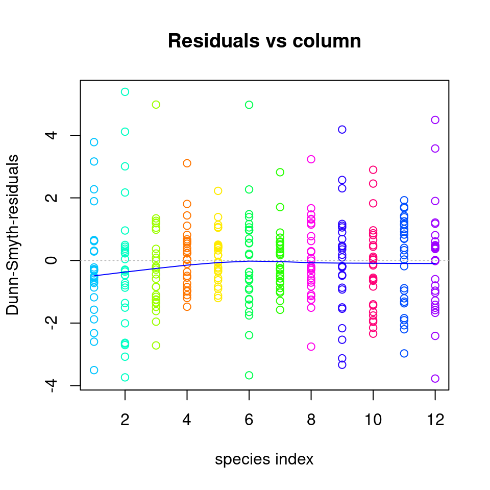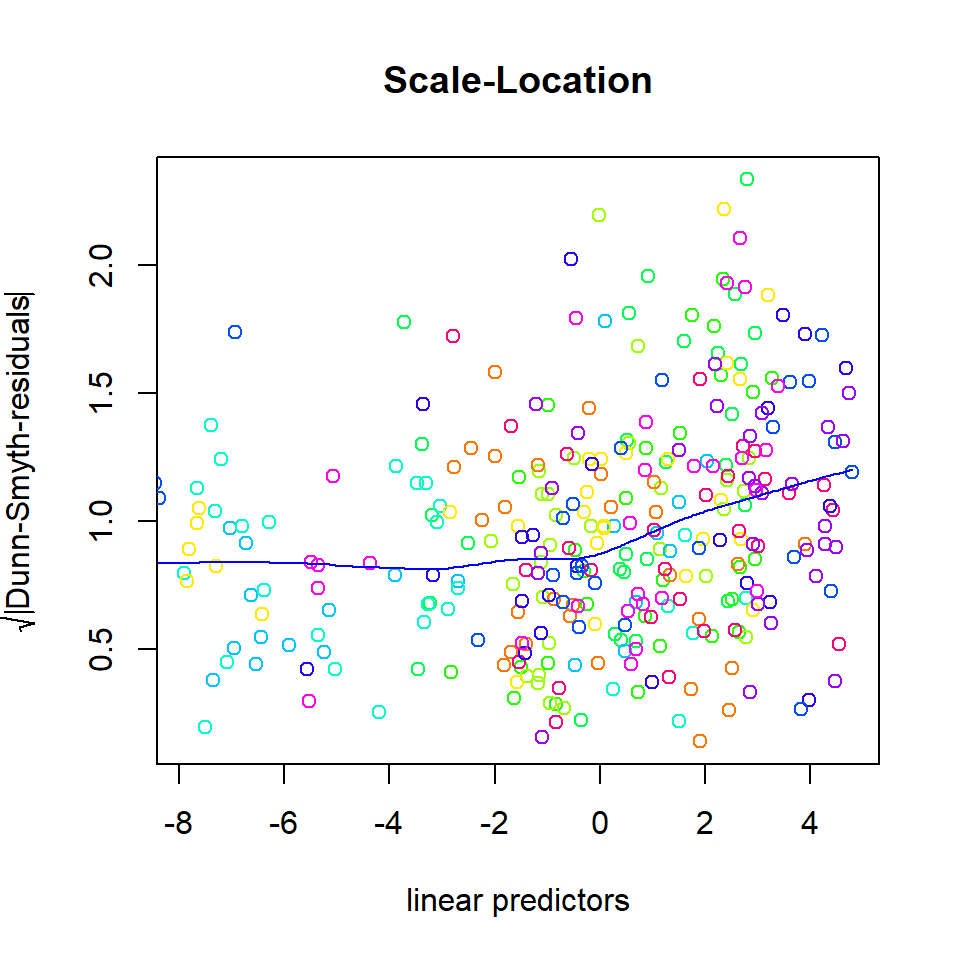
plot(fitnb)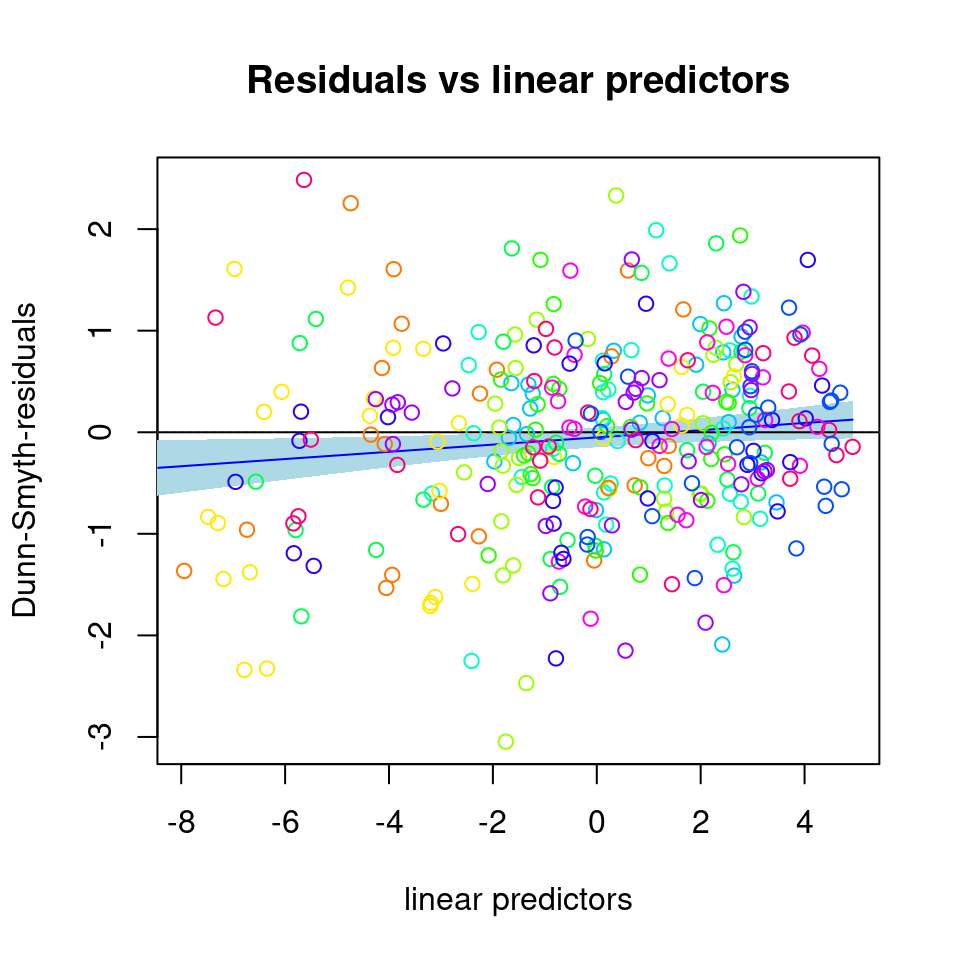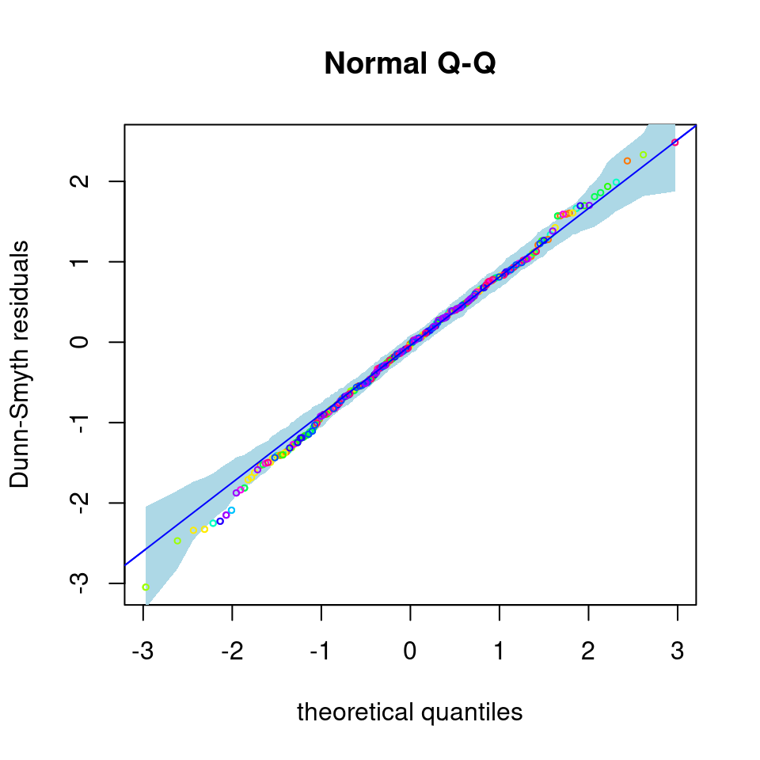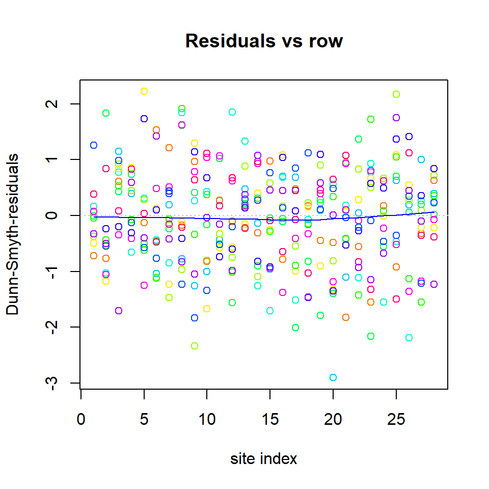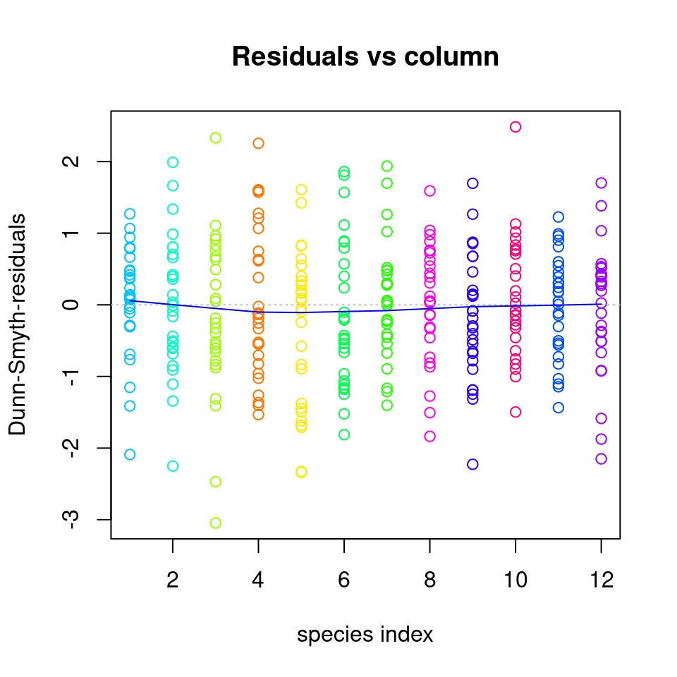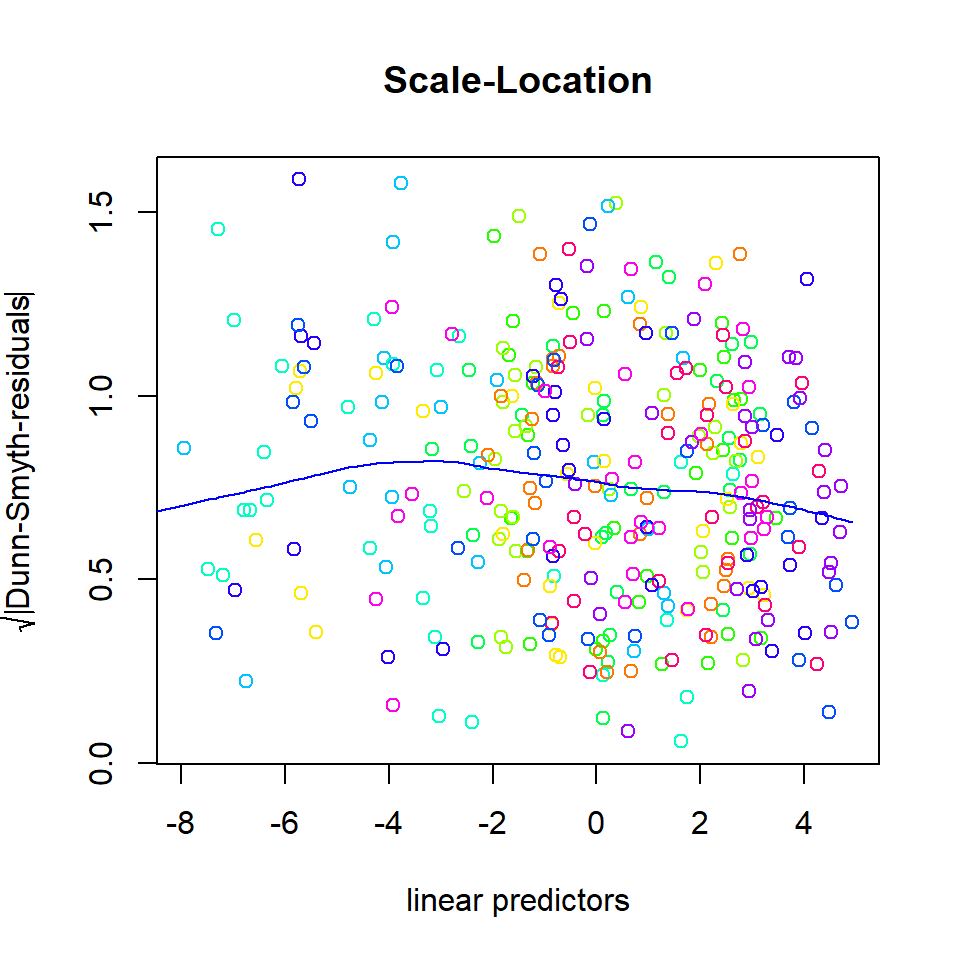
You could do these comparisons with Laplace method as well, using the code below, and it would give the same conclusion that NB distribution suits best:
E3. Explore the fitted model. Where are the estimates for parameters? What about predicted latent variables? Standard errors?
3. Lets explore the fitted model:
# Parameters:
coef(fitnb)
## $Species.scores
## LV1 LV2
## Alopacce 1.0000000 0.00000000
## Alopcune -0.2631308 1.00000000
## Alopfabr 0.9015904 -0.48409277
## Arctlute -0.7033289 2.02966237
## Arctperi 0.5940429 -1.58958678
## Auloalbi -0.6526522 1.53305113
## Pardlugu -0.8886406 -0.02804479
## Pardmont 0.7498429 0.58844211
## Pardnigr -0.5748387 1.78021826
## Pardpull -0.4146487 1.94805405
## Trocterr -0.4694560 0.78798902
## Zoraspin -0.6964298 1.15698163
##
## $sigma.lv
## LV1 LV2
## 1.803115 1.829194
##
## $Intercept
## Alopacce Alopcune Alopfabr Arctlute Arctperi Auloalbi Pardlugu
## 0.7739538 0.5519760 -0.1424282 -3.5902370 -3.3671146 -0.7302916 0.3188472
## Pardmont Pardnigr Pardpull Trocterr Zoraspin
## 1.6249434 -0.2746781 -0.1341553 2.6560730 0.2464853
##
## $inv.phi
## Alopacce Alopcune Alopfabr Arctlute Arctperi Auloalbi Pardlugu
## 1.3063451 1.4685540 0.7050970 0.8977316 2.3315953 1.5391622 1.1528548
## Pardmont Pardnigr Pardpull Trocterr Zoraspin
## 1.6176933 2.5410480 2.1962497 12.9782953 2.5727593
##
## $phi
## Alopacce Alopcune Alopfabr Arctlute Arctperi Auloalbi Pardlugu
## 0.76549453 0.68094193 1.41824457 1.11391873 0.42889090 0.64970412 0.86741189
## Pardmont Pardnigr Pardpull Trocterr Zoraspin
## 0.61816414 0.39353841 0.45532164 0.07705172 0.38868774
# Where are the predicted latent variable values? just fitp$lvs or
getLV(fitnb)
## LV1 LV2
## Row1 0.9286358 1.2703352704
## Row2 -0.6825861 0.7936338929
## Row3 0.6762707 1.2742426658
## Row4 -0.2470365 1.1497019629
## Row5 -0.3609854 1.2170669336
## Row6 -0.3522308 1.0085018177
## Row7 0.0292808 1.4258887715
## Row8 -1.5212599 -0.0709308445
## Row9 0.9108025 0.0009790952
## Row10 1.0374044 -0.4938984334
## Row11 1.4887736 0.3027146154
## Row12 1.3242026 0.8071223666
## Row13 0.1154459 1.3564493828
## Row14 -0.4367777 1.0144056468
## Row15 -1.3191762 -0.5448837091
## Row16 -1.1745898 -0.2429120874
## Row17 -1.1124248 -0.5129904726
## Row18 -1.1589011 -0.5431825471
## Row19 -1.3406187 -0.5030093993
## Row20 -1.3672761 -0.5923027950
## Row21 -1.1396286 -0.4758529500
## Row22 0.7644614 -1.3461984088
## Row23 0.9208750 -1.3808877675
## Row24 0.9791217 -1.3954820757
## Row25 0.6313181 0.5765859765
## Row26 0.2741126 -1.9643762619
## Row27 1.1157005 -1.3095793287
## Row28 1.0188885 -0.8260626020
# Standard errors for parameters:
fitnb$sd
## $theta
## LV1 LV2
## Alopacce 0.0000000 0.0000000
## Alopcune 0.2736062 0.0000000
## Alopfabr 0.3301694 0.2043963
## Arctlute 0.6746396 0.7845738
## Arctperi 0.4757645 0.5593867
## Auloalbi 0.4407255 0.3893049
## Pardlugu 0.2275865 0.2005334
## Pardmont 0.2196708 0.1816602
## Pardnigr 0.4734125 0.3800050
## Pardpull 0.4965374 0.4107377
## Trocterr 0.2098426 0.1569087
## Zoraspin 0.3480041 0.2797106
##
## $sigma.lv
## LV1 LV2
## 0.416302 0.425931
##
## $beta0
## Alopacce Alopcune Alopfabr Arctlute Arctperi Auloalbi Pardlugu Pardmont
## 0.4518223 0.4629769 0.5478400 1.7091035 1.4650396 0.7891066 0.4391272 0.3996763
## Pardnigr Pardpull Trocterr Zoraspin
## 0.7868753 0.8338929 0.3338746 0.5830102
##
## $inv.phi
## Alopacce Alopcune Alopfabr Arctlute Arctperi Auloalbi Pardlugu Pardmont
## 0.6025833 0.6025642 0.3957172 0.5787967 1.8040170 0.8383645 0.5810401 0.7755733
## Pardnigr Pardpull Trocterr Zoraspin
## 1.3149958 1.2472422 6.8924526 1.2850529
##
## $phi
## Alopacce Alopcune Alopfabr Arctlute Arctperi Auloalbi Pardlugu
## 0.35310287 0.27939810 0.79595262 0.71817964 0.33184424 0.35388661 0.43717653
## Pardmont Pardnigr Pardpull Trocterr Zoraspin
## 0.29636743 0.20365666 0.25857550 0.04092027 0.19414342E4. Fit model with different numbers of latent variables.
4. Default number of latent variables is 2. Let’s try 1 and 3 latent variables as well:
# In exercise 2, we fitted GLLVM with two latent variables
fitnb
## Call:
## gllvm(y = spider$abund, family = "negative.binomial", num.lv = 2)
## family:
## [1] "negative.binomial"
## method:
## [1] "VA"
##
## log-likelihood: -733.6806
## Residual degrees of freedom: 289
## AIC: 1561.361
## AICc: 1577.028
## BIC: 1740.765
# How about 1 or 3 LVs
fitnb1 <- gllvm(y = spider$abund, family = "negative.binomial", num.lv = 1)
fitnb1
## Call:
## gllvm(y = spider$abund, family = "negative.binomial", num.lv = 1)
## family:
## [1] "negative.binomial"
## method:
## [1] "VA"
##
## log-likelihood: -759.4012
## Residual degrees of freedom: 300
## AIC: 1590.802
## AICc: 1599.712
## BIC: 1728.218
getLV(fitnb1)
## LV1
## Row1 -0.81677885
## Row2 -0.94957917
## Row3 -0.91684605
## Row4 -1.10566421
## Row5 -1.22145053
## Row6 -1.03399827
## Row7 -1.26767417
## Row8 -0.53472727
## Row9 0.36606022
## Row10 1.00892956
## Row11 0.31291767
## Row12 -0.31669551
## Row13 -1.17618117
## Row14 -1.03495900
## Row15 -0.09008119
## Row16 -0.27457285
## Row17 -0.02445534
## Row18 -0.02078885
## Row19 -0.12968246
## Row20 -0.06887649
## Row21 -0.04321918
## Row22 1.54083391
## Row23 1.65025022
## Row24 1.68379865
## Row25 -0.28900841
## Row26 1.92917666
## Row27 1.62339919
## Row28 1.20020296
fitnb3 <- gllvm(y = spider$abund, family = "negative.binomial", num.lv = 3)
fitnb3
## Call:
## gllvm(y = spider$abund, family = "negative.binomial", num.lv = 3)
## family:
## [1] "negative.binomial"
## method:
## [1] "VA"
##
## log-likelihood: -733.6806
## Residual degrees of freedom: 279
## AIC: 1581.361
## AICc: 1605.145
## BIC: 1798.937
getLV(fitnb3)
## LV1 LV2 LV3
## Row1 0.92851838 1.270403980 -1.390627e-04
## Row2 -0.68266148 0.793671493 -1.564164e-04
## Row3 0.67619181 1.274321382 -3.546164e-05
## Row4 -0.24717091 1.149703158 -2.457898e-05
## Row5 -0.36108046 1.217071864 7.772190e-06
## Row6 -0.35231709 1.008542950 2.297262e-04
## Row7 0.02920885 1.425901801 -1.070212e-04
## Row8 -1.52129316 -0.070822617 -8.652500e-05
## Row9 0.91077875 0.001203205 -1.859559e-04
## Row10 1.03738806 -0.493631482 -1.732256e-04
## Row11 1.48873677 0.302971645 -2.236015e-04
## Row12 1.32415636 0.807300769 -1.736341e-04
## Row13 0.11536454 1.356477489 1.040755e-04
## Row14 -0.43681705 1.014444569 -7.286121e-05
## Row15 -1.31921066 -0.544746920 6.163759e-05
## Row16 -1.17465521 -0.242790480 1.048310e-04
## Row17 -1.11251679 -0.512876909 3.150762e-05
## Row18 -1.15893764 -0.543038378 -5.939060e-05
## Row19 -1.34063387 -0.502858771 7.325980e-05
## Row20 -1.36731859 -0.592162572 5.200309e-05
## Row21 -1.13967524 -0.475704350 -4.157885e-05
## Row22 0.76441705 -1.345959032 7.963933e-05
## Row23 0.92083240 -1.380621470 -2.665843e-05
## Row24 0.97909026 -1.395232926 6.280600e-05
## Row25 0.63125849 0.576747567 5.236402e-04
## Row26 0.27409932 -1.964095470 4.778573e-05
## Row27 1.11559180 -1.309363933 8.601327e-05
## Row28 1.01884710 -0.825809221 5.492138e-05E5. Include environmental variables to the GLLVM and explore the model fit.
5. Environmental variables can be included
with an argument X:
fitnbx <- gllvm(y = spider$abund, X = spider$x, family = "negative.binomial", seed = 123, num.lv = 2)
fitnbx
## Call:
## gllvm(y = spider$abund, X = spider$x, family = "negative.binomial",
## num.lv = 2, seed = 123)
## family:
## [1] "negative.binomial"
## method:
## [1] "VA"
##
## log-likelihood: -593.6749
## Residual degrees of freedom: 217
## AIC: 1425.35
## AICc: 1557.572
## BIC: 1879.586
coef(fitnbx)
## $Species.scores
## LV1 LV2
## Alopacce 1.00000000 0.000000e+00
## Alopcune 0.68740358 1.000000e+00
## Alopfabr -3.74733496 5.841052e-01
## Arctlute -1.68169540 1.151874e+00
## Arctperi -6.23294865 2.467938e-09
## Auloalbi 0.61056204 6.094540e-01
## Pardlugu -4.31399424 1.960968e-01
## Pardmont 0.32530146 3.640936e-01
## Pardnigr -0.08050142 1.070886e+00
## Pardpull 2.51168171 7.282458e-01
## Trocterr -5.10742039 4.991132e-01
## Zoraspin 0.79327980 7.372639e-01
##
## $sigma.lv
## LV1 LV2
## 3.684223e-11 9.497816e-01
##
## $Intercept
## Alopacce Alopcune Alopfabr Arctlute Arctperi Auloalbi
## -1.8104307 -4.4233888 -1.6437093 -14.6907486 -14.9070451 -15.7114982
## Pardlugu Pardmont Pardnigr Pardpull Trocterr Zoraspin
## 7.9326570 -6.3805205 -5.1537460 -13.0276134 -0.2005391 -3.8447719
##
## $Xcoef
## soil.dry bare.sand fallen.leaves moss herb.layer
## Alopacce -0.9582355 -0.09059587 -0.32434987 0.10121395 0.73703084
## Alopcune 1.3490437 -0.45005565 0.01729447 -0.19940403 0.41950683
## Alopfabr -0.8698102 0.69556199 -0.40324575 0.54008424 0.30194220
## Arctlute 5.8731834 0.16615440 -1.67211701 0.34349484 -0.12401929
## Arctperi -1.7801638 0.23854089 -2.46599801 0.49574499 0.02125245
## Auloalbi 0.2248354 -0.04630682 0.62842526 0.06252531 4.05064323
## Pardlugu -2.5236085 -0.71543618 0.36221161 -0.37422742 0.58639650
## Pardmont 1.5851980 0.13323349 -0.51424473 0.88735712 0.73423736
## Pardnigr 2.5564208 -0.02660033 -0.84827764 -0.45634282 0.72877660
## Pardpull 3.0007287 -0.35244526 -0.47039314 0.36474703 1.95132069
## Trocterr 1.2400290 -0.23012450 -0.22748066 -0.20324003 0.44584236
## Zoraspin 2.0999175 0.11998816 -0.57210558 -0.08995465 0.62001340
## reflection
## Alopacce 0.86918652
## Alopcune 0.42098178
## Alopfabr 0.06158691
## Arctlute -0.64317106
## Arctperi 4.00610626
## Auloalbi -0.54351614
## Pardlugu -1.16974827
## Pardmont 0.07820854
## Pardnigr -0.53378506
## Pardpull -0.36809441
## Trocterr -0.29459365
## Zoraspin -0.93160349
##
## $inv.phi
## Alopacce Alopcune Alopfabr Arctlute Arctperi Auloalbi
## 9.155092e+00 2.937738e+00 7.756900e+00 2.022804e+00 1.307371e+09 1.022807e+01
## Pardlugu Pardmont Pardnigr Pardpull Trocterr Zoraspin
## 2.772641e+01 1.990643e+00 7.671982e+00 1.667509e+01 2.643120e+01 6.321719e+00
##
## $phi
## Alopacce Alopcune Alopfabr Arctlute Arctperi Auloalbi
## 1.092288e-01 3.403980e-01 1.289175e-01 4.943634e-01 7.648936e-10 9.777017e-02
## Pardlugu Pardmont Pardnigr Pardpull Trocterr Zoraspin
## 3.606669e-02 5.023501e-01 1.303444e-01 5.996970e-02 3.783408e-02 1.581848e-01
# confidence intervals for parameters:
confint(fitnbx)
## 2.5 % 97.5 %
## sigma.lv.LV1 -2.999998e-08 3.007366e-08
## sigma.lv.LV2 4.336719e-01 1.465891e+00
## theta.LV1.1 1.000000e+00 1.000000e+00
## theta.LV1.2 -8.396014e+10 8.396014e+10
## theta.LV1.3 -4.845701e+10 4.845701e+10
## theta.LV1.4 -9.567498e+10 9.567498e+10
## theta.LV1.5 -2.800153e+05 2.800029e+05
## theta.LV1.6 -5.066875e+10 5.066875e+10
## theta.LV1.7 -1.635994e+10 1.635994e+10
## theta.LV1.8 -3.269902e+10 3.269902e+10
## theta.LV1.9 -8.875631e+10 8.875631e+10
## theta.LV1.10 -6.024211e+10 6.024211e+10
## theta.LV1.11 -4.117163e+10 4.117163e+10
## theta.LV1.12 -6.107673e+10 6.107673e+10
## theta.LV2.1 0.000000e+00 0.000000e+00
## theta.LV2.2 1.000000e+00 1.000000e+00
## theta.LV2.3 -5.150172e-02 1.219712e+00
## theta.LV2.4 -1.944767e-01 2.498225e+00
## theta.LV2.5 -6.780035e-05 6.780528e-05
## theta.LV2.6 5.415426e-02 1.164754e+00
## theta.LV2.7 -1.286046e-01 5.207982e-01
## theta.LV2.8 -1.511665e-01 8.793538e-01
## theta.LV2.9 4.318012e-01 1.709971e+00
## theta.LV2.10 2.701460e-01 1.186346e+00
## theta.LV2.11 2.336325e-01 7.645938e-01
## theta.LV2.12 2.325210e-01 1.242007e+00
## Intercept.Alopacce -5.313578e+00 1.692716e+00
## Intercept.Alopcune -9.576699e+00 7.299214e-01
## Intercept.Alopfabr -7.968805e+00 4.681386e+00
## Intercept.Arctlute -3.133807e+01 1.956577e+00
## Intercept.Arctperi -2.629968e+01 -3.514407e+00
## Intercept.Auloalbi -2.247022e+01 -8.952774e+00
## Intercept.Pardlugu 3.194675e+00 1.267064e+01
## Intercept.Pardmont -1.043169e+01 -2.329350e+00
## Intercept.Pardnigr -1.019990e+01 -1.075926e-01
## Intercept.Pardpull -1.860724e+01 -7.447987e+00
## Intercept.Trocterr -2.429842e+00 2.028764e+00
## Intercept.Zoraspin -7.700172e+00 1.062774e-02
## Xcoef.soil.dry:Alopacce -1.627837e+00 -2.886336e-01
## Xcoef.soil.dry:Alopcune -1.660056e-01 2.864093e+00
## Xcoef.soil.dry:Alopfabr -1.961732e+00 2.221113e-01
## Xcoef.soil.dry:Arctlute 4.237786e-01 1.132259e+01
## Xcoef.soil.dry:Arctperi -3.435299e+00 -1.250290e-01
## Xcoef.soil.dry:Auloalbi -9.612119e-01 1.410883e+00
## Xcoef.soil.dry:Pardlugu -3.776341e+00 -1.270876e+00
## Xcoef.soil.dry:Pardmont 6.323304e-01 2.538066e+00
## Xcoef.soil.dry:Pardnigr 1.053251e+00 4.059591e+00
## Xcoef.soil.dry:Pardpull 1.556322e+00 4.445135e+00
## Xcoef.soil.dry:Trocterr 5.869546e-01 1.893104e+00
## Xcoef.soil.dry:Zoraspin 9.199142e-01 3.279921e+00
## Xcoef.bare.sand:Alopacce -3.852455e-01 2.040538e-01
## Xcoef.bare.sand:Alopcune -9.738075e-01 7.369625e-02
## Xcoef.bare.sand:Alopfabr 1.975940e-01 1.193530e+00
## Xcoef.bare.sand:Arctlute -1.529998e+00 1.862307e+00
## Xcoef.bare.sand:Arctperi -6.815202e-01 1.158602e+00
## Xcoef.bare.sand:Auloalbi -4.621820e-01 3.695684e-01
## Xcoef.bare.sand:Pardlugu -1.248273e+00 -1.825998e-01
## Xcoef.bare.sand:Pardmont -1.852345e-01 4.517015e-01
## Xcoef.bare.sand:Pardnigr -5.132879e-01 4.600872e-01
## Xcoef.bare.sand:Pardpull -8.536669e-01 1.487764e-01
## Xcoef.bare.sand:Trocterr -4.442619e-01 -1.598707e-02
## Xcoef.bare.sand:Zoraspin -2.625400e-01 5.025164e-01
## Xcoef.fallen.leaves:Alopacce -9.896924e-01 3.409926e-01
## Xcoef.fallen.leaves:Alopcune -5.797440e-01 6.143329e-01
## Xcoef.fallen.leaves:Alopfabr -1.537058e+00 7.305669e-01
## Xcoef.fallen.leaves:Arctlute -3.797623e+00 4.533891e-01
## Xcoef.fallen.leaves:Arctperi -2.829451e+02 2.780131e+02
## Xcoef.fallen.leaves:Auloalbi 1.123142e-01 1.144536e+00
## Xcoef.fallen.leaves:Pardlugu 3.927136e-02 6.851519e-01
## Xcoef.fallen.leaves:Pardmont -1.026752e+00 -1.737153e-03
## Xcoef.fallen.leaves:Pardnigr -1.464641e+00 -2.319145e-01
## Xcoef.fallen.leaves:Pardpull -9.510174e-01 1.023112e-02
## Xcoef.fallen.leaves:Trocterr -4.819555e-01 2.699417e-02
## Xcoef.fallen.leaves:Zoraspin -1.030256e+00 -1.139549e-01
## Xcoef.moss:Alopacce -2.225685e-01 4.249964e-01
## Xcoef.moss:Alopcune -7.950402e-01 3.962321e-01
## Xcoef.moss:Alopfabr 1.279571e-02 1.067373e+00
## Xcoef.moss:Arctlute -9.123076e-01 1.599297e+00
## Xcoef.moss:Arctperi -1.222098e-01 1.113700e+00
## Xcoef.moss:Auloalbi -4.180192e-01 5.430698e-01
## Xcoef.moss:Pardlugu -8.454600e-01 9.700519e-02
## Xcoef.moss:Pardmont 4.273663e-01 1.347348e+00
## Xcoef.moss:Pardnigr -1.039291e+00 1.266052e-01
## Xcoef.moss:Pardpull -8.542435e-02 8.149184e-01
## Xcoef.moss:Trocterr -4.719668e-01 6.548673e-02
## Xcoef.moss:Zoraspin -5.684634e-01 3.885541e-01
## Xcoef.herb.layer:Alopacce 3.371468e-01 1.136915e+00
## Xcoef.herb.layer:Alopcune -3.379453e-01 1.176959e+00
## Xcoef.herb.layer:Alopfabr -2.708299e-01 8.747143e-01
## Xcoef.herb.layer:Arctlute -3.060603e+00 2.812565e+00
## Xcoef.herb.layer:Arctperi -4.106428e-01 4.531476e-01
## Xcoef.herb.layer:Auloalbi 2.456569e+00 5.644717e+00
## Xcoef.herb.layer:Pardlugu 2.740931e-01 8.986999e-01
## Xcoef.herb.layer:Pardmont 4.664899e-02 1.421826e+00
## Xcoef.herb.layer:Pardnigr -1.335835e-01 1.591137e+00
## Xcoef.herb.layer:Pardpull 9.273020e-01 2.975339e+00
## Xcoef.herb.layer:Trocterr 1.165964e-01 7.750883e-01
## Xcoef.herb.layer:Zoraspin -1.608178e-02 1.256109e+00
## Xcoef.reflection:Alopacce 3.389802e-01 1.399393e+00
## Xcoef.reflection:Alopcune -3.763099e-01 1.218273e+00
## Xcoef.reflection:Alopfabr -9.860919e-01 1.109266e+00
## Xcoef.reflection:Arctlute -1.929960e+00 6.436175e-01
## Xcoef.reflection:Arctperi 1.460193e+00 6.552019e+00
## Xcoef.reflection:Auloalbi -1.141629e+00 5.459627e-02
## Xcoef.reflection:Pardlugu -1.807525e+00 -5.319716e-01
## Xcoef.reflection:Pardmont -5.106936e-01 6.671107e-01
## Xcoef.reflection:Pardnigr -1.302878e+00 2.353081e-01
## Xcoef.reflection:Pardpull -8.995572e-01 1.633684e-01
## Xcoef.reflection:Trocterr -6.349105e-01 4.572324e-02
## Xcoef.reflection:Zoraspin -1.527917e+00 -3.352897e-01
## inv.phi.Alopacce -1.059152e+01 2.890170e+01
## inv.phi.Alopcune -7.209993e-02 5.947576e+00
## inv.phi.Alopfabr -8.210419e+00 2.372422e+01
## inv.phi.Arctlute -1.057743e+00 5.103350e+00
## inv.phi.Arctperi -7.008498e+12 7.011113e+12
## inv.phi.Auloalbi -3.754870e+00 2.421101e+01
## inv.phi.Pardlugu -4.821624e+01 1.036691e+02
## inv.phi.Pardmont 5.019658e-01 3.479321e+00
## inv.phi.Pardnigr -1.345711e+00 1.668968e+01
## inv.phi.Pardpull -4.388581e+00 3.773876e+01
## inv.phi.Trocterr -3.376270e+00 5.623867e+01
## inv.phi.Zoraspin -1.191280e+00 1.383472e+01 I have problems in model fitting. My model
converges to infinity or local maxima: GLLVMs are complex models
where starting values have a big role. Choosing a different starting
value method (see argument starting.val) or use multiple
runs and pick up the one giving highest log-likelihood value using
argument n.init. More variation to the starting points can
be added with jitter.var.
My results does not look the same as in answers: The results may not be exactly the same as in the answers, as the initial values for each model fit are slightly different, so the results may also differ slightly.
GLLVMs can be used as a model-based approach to unconstrained ordination by including two latent variables in the model:
The latent variable term try to capture the underlying factors driving species abundances at sites.
Predictions for the two latent variables, , then provide coordinates for sites in the ordination plot and then provides a graphical representation of which sites are similar in terms of their species composition.
ordiplot() produces ordination plots based on fitted
GLLVMs.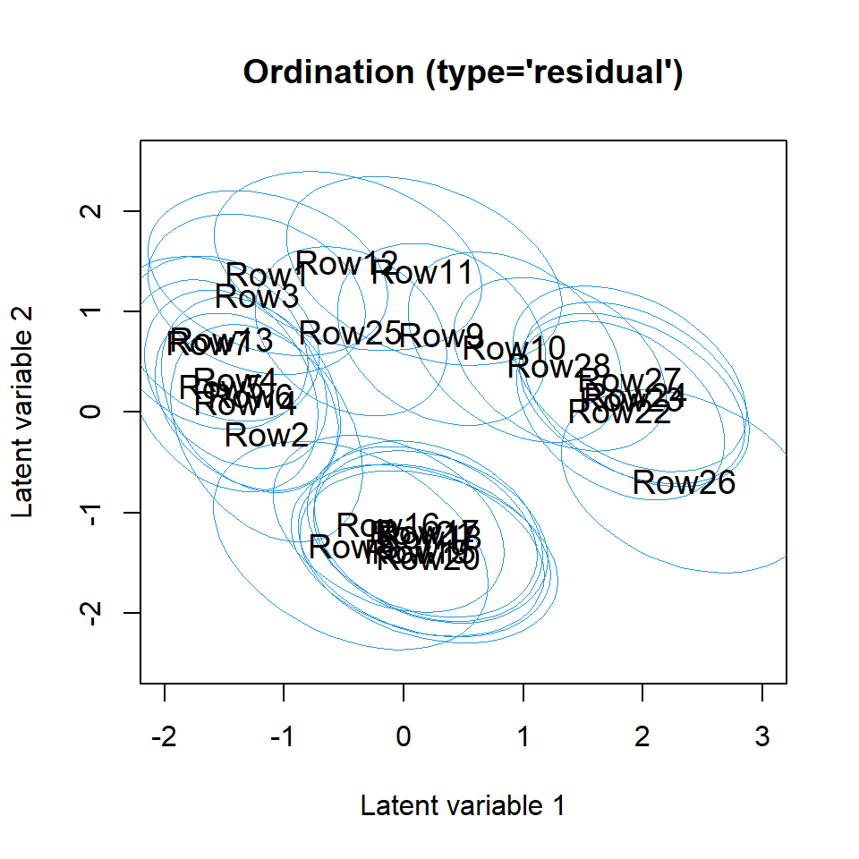
biplot = TRUE in ordiplot()).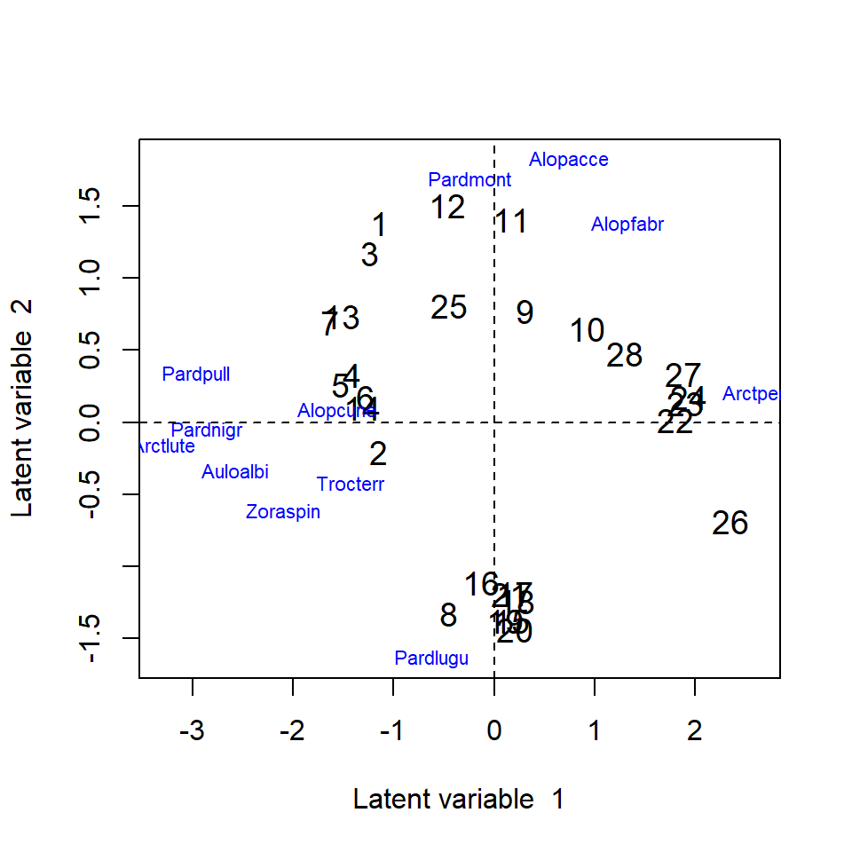
# Arbitrary color palette, a vector length of 20. Can use, for example, colorRampPalette from package grDevices
rbPal <- c("#00FA9A", "#00EC9F", "#00DFA4", "#00D2A9", "#00C5AF", "#00B8B4", "#00ABB9", "#009DBF", "#0090C4", "#0083C9", "#0076CF", "#0069D4", "#005CD9", "#004EDF", "#0041E4", "#0034E9", "#0027EF", "#001AF4", "#000DF9", "#0000FF")
X <- spider$x
par(mfrow = c(3,2), mar=c(4,4,2,2))
for(i in 1:ncol(X)){
Col <- rbPal[as.numeric(cut(X[,i], breaks = 20))]
ordiplot(fitnb, symbols = T, s.colors = Col, main = colnames(X)[i],
biplot = TRUE)
}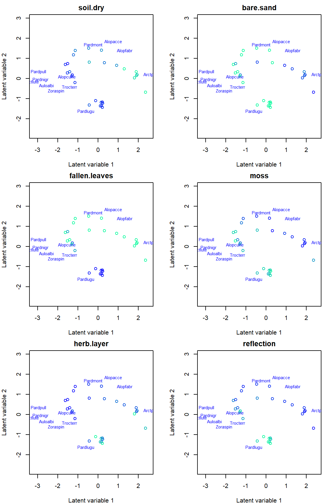
Here environmental gradients stand out quite clearly, indicating that, at least, some of the differences in species compositions at sites can be explained by the differences in environmental conditions.
The next step would be to include covariates to the model to study more precisely the effects of environmental variables:
Niku, J., F.K.C. Hui, S. Taskinen, and D.I. Warton. 2019. Gllvm - Fast Analysis of Multivariate Abundance Data with Generalized Linear Latent Variable Models in R. 10. Methods in Ecology and Evolution: 2173–82↩︎
Kasper Kristensen, Anders Nielsen, Casper W. Berg, Hans Skaug, Bradley M. Bell (2016). TMB: Automatic Differentiation and Laplace Approximation. Journal of Statistical Software, 70(5), 1-21↩︎
Hui, F. K. C., Warton, D., Ormerod, J., Haapaniemi, V., and Taskinen, S. (2017). Variational approximations for generalized linear latent variable models. Journal of Computational and Graphical Statistics. Journal of Computational and Graphical Statistics, 26:35-43↩︎
Korhonen, P., Hui, F. K. C., Niku, J., and Taskinen, S. (2021). Fast, universal estimation of latent variable models using extended variational approximations, arXiv:2107.02627 .↩︎
Niku, J., Warton, D. I., Hui, F. K. C., and Taskinen, S. (2017). Generalized linear latent variable models for multivariate count and biomass data in ecology. Journal of Agricultural, Biological, and Environmental Statistics, 22:498-522.↩︎
van der Aart, P. J. M., and Smeenk-Enserink, N. (1975) Correlations between distributions of hunting spiders (Lycosidae, Ctenidae) and environmental characteristics in a dune area. Netherlands Journal of Zoology 25, 1-45.↩︎
Dunn, P. K., and Smyth, G. K. (1996). Randomized quantile residuals. Journal of Computational and Graphical Statistics, 5, 236-244.↩︎
Gabriel, K. R. (1971). The biplot graphic display of matrices with application to principal component analysis. Biometrika, 58, 453-467↩︎